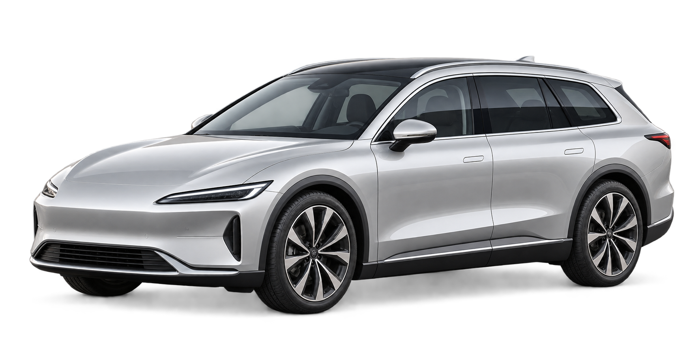
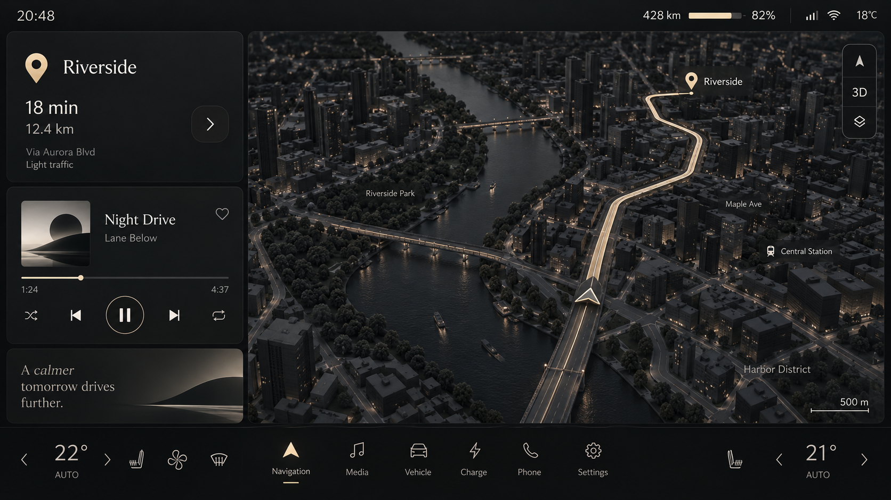

新通勤。车载 HMI 交互设计
从出发到抵达，连接座舱总览、导航、车辆、空调、音乐与充电，让信息与操作井然有序。
- 六屏交互
- 驾驶与驻车模式
- 状态与操作反馈
车辆状态界面内容示意
演示数据

- 电量
- 68%
- 续航
- 326km
- 车锁状态
- 已锁车
王瑞琪｜北京理工大学设计学硕士 · 2027 届
车辆 HMI × AI 产品 × 交互设计
从需求梳理、功能设计到交互原型与实车验证，让车内交互更清晰、易用。
点击下方场景，原位切换；屏幕内也可以直接操作。
SELECTED WORK
真实项目的思考。
独立概念的探索。
展示全部 6 个项目
从出发到抵达，连接座舱总览、导航、车辆、空调、音乐与充电，让信息与操作井然有序。

面向中高端新能源汽车，以黑金配色建立清晰的信息层级。连接导航、多媒体、数字仪表、座舱舒适与个性化设置，探索从容的座舱交互。

可在演示内滚动浏览；所有数据与操作均为模拟。本页不保存设置，收起后重置。
连接大纲、知识检索与写作，
让 AI 的能力成为连续的任务体验。
界面为另行制作的独立概念改版，非实习原始交付。
从操作员反馈出发，重新梳理既有功能与信息层级。
区分共享信息与角色所需，建立角色、信息与屏幕的对应。
驻车随行工作台。探索后排短时工作中，桌面展开、小物就位与收拢携行的体验。
AI 辅助概念视觉 · 尚未工程验证ABOUT RUIQI
王瑞琪 Ruiqi Wang
工业设计的训练，让我习惯从场景、动作与限制条件看问题。
现在，我把这套思考延伸到 AI 产品与车载 HMI，关注复杂任务怎样被清楚表达，以及用户怎样把下一步做下去。